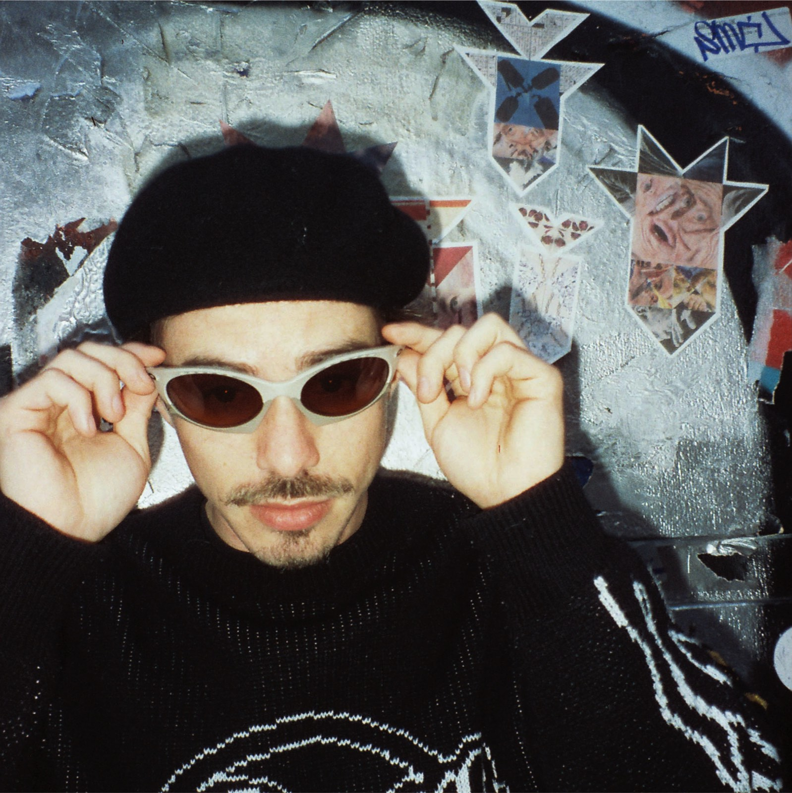

About
Louis Guichard, born in 1997, is a French photographer and visual artist based between Europe and the United States.
His practice grew out of a broader career in image-making. In Paris, he spent five years working across audiovisual production, film in the fashion industry, and music staging, developing visual identities, and creating worlds around brands, artists and collections.
He later moved to New York, where his work expanded into storytelling and brand building for tech and onchain companies between New York and San Francisco. Moving between fashion, film and tech shaped his understanding of images not simply as something to look at, but as a way of constructing narratives, identities and perception.
Alongside this work, he travelled extensively across the United States, China and India. Photography gradually became a way of moving in the opposite direction: away from constructed images and toward something more instinctive, uncertain and immediate.
Working exclusively with 35mm film, his photographs remain entirely unretouched, preserving the integrity of the original negative and the spontaneity of the moment captured.
His work explores the space between reality and perception. Rather than documenting places with precision, he is interested in what they leave behind: a feeling, a memory, a trace.
For Louis, a photograph is not an answer but an invitation, a space where the viewer can bring their own memories, emotions and interpretations.
In a visual culture increasingly built around immediacy, explanation and control, he remains attached to images that resist those demands: photographs that preserve mystery, leave room for interpretation and give value to what remains unsaid.
For prints, commissions or collaborations:
hello@louisguichard.com
